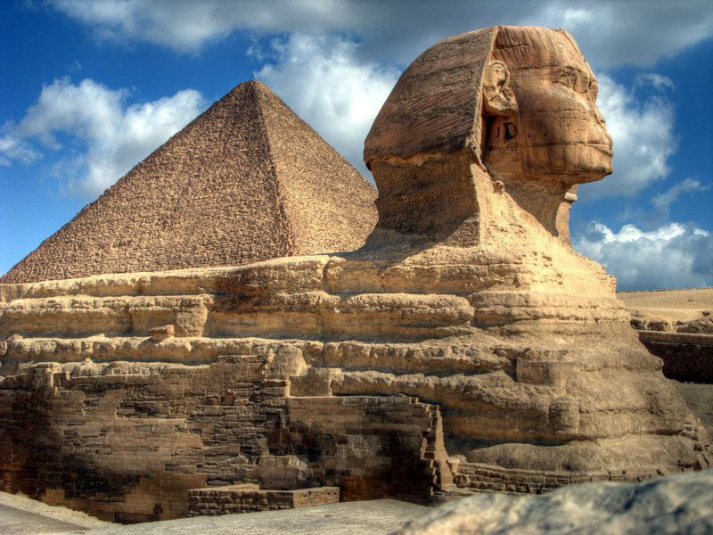

1. The Pyramids and the Sphinx

Located in Giza, they are one of the Seven Wonders of the Ancient World.
Egypt is a country rich in history and culture, often called the "Cradle of Civilization." It is home to iconic landmarks such as the Great Pyramids of Giza, the Sphinx, and the Nile River, the longest river in the world. Known for its ancient wonders and vibrant modern cities, Egypt offers a unique blend of tradition and progress, attracting millions of visitors each year.

Located in Giza, they are one of the Seven Wonders of the Ancient World.

Situated in Luxor, they are among the greatest temples of Pharaonic civilization.
A prominent Islamic landmark in Cairo.

Houses an extensive collection of Pharaonic artifacts, located in Tahrir Square, Cairo.

Showcases royal mummies and significant artifacts, located in Fustat.

One of the oldest mosques in Cairo and a major center for Islamic studies.

A fun amusement park suitable for all ages.
A chance to explore Lake Qarun and nearby desert wonders.

The highest peak in Egypt, offering breathtaking views and hiking opportunities.
A modern cultural center reviving the legacy of the ancient Library of Alexandria.